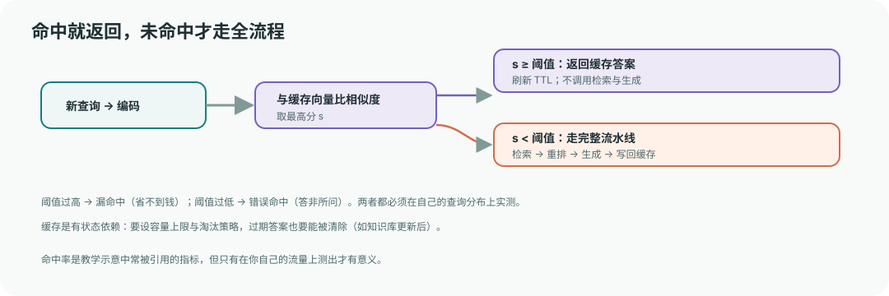
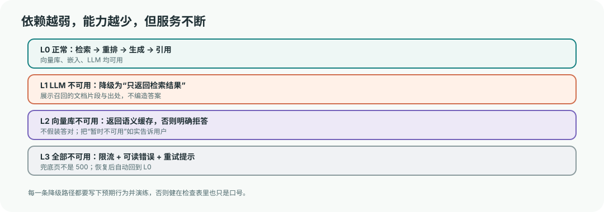

DEPLOYMENT / SERVING
生产级 RAG 部署：
把无状态服务与有状态依赖分开
开发环境里“1 个用户、10 条文档”跑得完美，不代表上线后能扛住并发。真正的隐形杀手往往不是算法，而是连接池、限流与超时这些基础设施配置。这一篇给出一个可落实的部署骨架，并强调：容量与成本必须在你自己的负载上实测，而不是照搬别人的百分比。
ENGINEERING / PROBLEM
原型能跑 ≠ 上线能扛
一个常见的误解是“本地能跑，部署只是把它搬到服务器上”。实际上，原型与生产面对的是不同的失败模式：原型只有你一个用户、文档固定、没有超时压力；生产要面对并发、依赖服务的配额与故障，以及尾部延迟。
下面这类事故一再出现，且几乎都不是算法问题：
- 连接池耗尽：向量数据库连接池设得太小，并发一上来，请求就排队直到超时。
- 外部 API 限流：把开发用的低配额 key 直接带到线上，突发流量立刻触发限流，整条链路卡住。
- 超时链不匹配：前端超时 5 秒，而生成平均就要 8 秒，于是每个请求都在正常返回前被前端掐断。
因此本章的组织方式是先分清“谁是无状态、谁是有状态”，再据此决定扩容、设上限与降级。先看架构。
ENGINEERING / TOPOLOGY
一张图：无状态与有状态分层
把系统按“是否保存状态”分成两层，是决定怎么扩容的前提。无状态层（API 实例）不保存本地会话，可以随时增减副本；有状态层（缓存、向量库、推理集群）保存数据或占有硬件，扩容不能只靠“多开几个”。

分成两层后，扩容与设限就有据可循：无状态层靠增加副本；有状态层要么分片、要么加副本，并且必须给每个连接池设定上限与等待队列，避免一处打满拖垮全局。
ENGINEERING / CACHE
语义缓存：省在何处，赔在何处
语义缓存的想法很直接：如果新查询和之前某次查询“意思相近”，就直接返回那次的结果，跳过检索与生成。它是降低平均延迟与成本的有效手段，但它也是一层附加的有状态依赖，会引入新的错误模式。


什么时候省
- 查询分布高度重复（如客服常见问题）。
- 答案随时间变化缓慢，过期成本低。
- 生成阶段占比高（相比检索）。
什么时候赔
- 阈值调低就会把“不同问题”当成“同一问题”，返回错误答案。
- 知识库更新后，旧缓存会持续返回过期答案，需按数据变更主动失效。
- 缓存本身占内存，需设容量上限与淘汰策略。
ENGINEERING / CAPACITY
显存与量化：先算账，再选卡
推理层的瓶颈通常是显存，而不是算力。选卡前先把显存账算清：权重只是其中一项，还要加上处理长上下文时的键值缓存（KV cache）和运行时开销。一个粗略的估算式是：
其中 N_param 是参数量，b_w 是每个权重占的字节（FP16 为 2，INT4 约 0.5），L 是层数，H_kv 是 KV 头数，d_head 是每头维度，S 是并发序列长度之和，系数 2 对应 K 与 V 两份。注意 KV 项随并发与上下文长度增长，这正是长上下文吃显存的原因。
| 参数量 | FP16 权重 | INT4 权重（约） |
|---|---|---|
| 7B | ≈ 14 GB | ≈ 3.5 GB |
| 13B | ≈ 26 GB | ≈ 6.5 GB |
| 70B | ≈ 140 GB | ≈ 35 GB |
上表按 参数量 × 字节/参数 直接计算（FP16=2 字节，INT4≈0.5 字节），是教学示意，不含 KV 缓存、激活与框架保留；实际显存占用必须在目标推理引擎上实测。量化会节省显存，但可能损失精度，需在评估集上对比效果（见第十八章）。
ENGINEERING / COST
成本拆解与降级
RAG 每次查询的成本可以拆成几块，但各块占比随业务差异很大，不应照搬外部百分比。更可靠的做法是在自己的监控里按阶段计量 token 与调用次数，再定位真正的大头。
| 成本项 | 驱动因素 | 可尝试的优化方向 |
|---|---|---|
| LLM 推理 | 上下文 token 数、输出长度、模型规模 | 控制每轮附录 chunk 数与 chunk 大小、限制输出长度、小模型路由、量化 |
| Embedding | 查询与文档的编码量 | 缓存高频查询、自托管模型、批量编码 |
| 向量数据库 | 索引内存、副本数与查询量 | PQ 量化降内存、冷热分层、按需扩缩 |
| 基础设施 | GPU / 带宽 / 存储常驻成本 | 预留实例、批任务用抢占式实例 |
检索结果数 × 平均 chunk 大小；提示词模板与输出长度另计。把附录 chunk 数从 5 降到 3、或缩短输出，都可以直接降 token，但必须确认召回与质量未受损（见第十八章）。省钱的另一面是降级：当某个依赖不可用或超预算时，系统应有明确的降级行为，而不是直接失败。下一节把降级路径画成阶梯。
ENGINEERING / RESILIENCE
灾备与降级阶梯
生产系统的“单点故障”比传统 Web 应用更多：向量库、嵌入服务、推理引擎任何一个挂了，都会影响整条链。关键是提前把降级行为写下来并演练，而不是默认返回 500。下面的阶梯把“依赖越弱、能力越少、但服务不断”具体化：


- 多可用区：至少两个可用区，主区承载在线流量，备区保最小副本。
- 数据备份：向量库定期快照加日志，明确 RPO（恢复点目标）与 RTO（恢复时间目标）并定期验证恢复。
- 定期演练：把“拔掉一个依赖”当作常态测试，否则备系统可能从未真正工作过。
ENGINEERING / CHECKLIST
上线检查清单
把前面几节的结论落成一份可勾选的清单。它不保证系统一定稳，但能把最常见的部署隐患提前暴露：
基础架构
- 每个组件都有健康检查端点（如
/health）。 - 按 CPU / 内存 / QPS 配置自动扩缩容策略。
- 数据库连接池设上限与等待队列，避免无限排队。
- 对外 API 有速率限制（rate limiting）。
安全
- 密钥轮换与集中管理（Vault / 云密钥服务）。
- 输入侧注入防护（见第十六章）。
- 输出侧 PII / 敏感词过滤（见第十七章）。
可观测性
- 关键指标有埋点（阶段耗时、错误率、token 用量）。
- 每条请求有唯一追踪 ID（见第二十五章）。
- 设置 P95 延迟与错误率告警阀值。
- 日志聚合到统一平台。
成本与灾备
- LLM 调用量有预算告警。
- 语义缓存已启用，并观测其命中与错误命中。
- 数据至少两个副本，降级策略已实现并演练。
这份清单与本章图是一致的：无状态层管扩展，有状态层管容量与降级。下一章用一个端到端项目把这些环节串起来。
来源与延伸阅读
- Docker Compose 官方文档 — 多服务编排与服务依赖
- Redis 官方文档：键过期与内存淘汰策略 — 缓存容量上限与 TTL
- Milvus 官方文档 — 分片、副本与标量 / 向量索引
- vLLM 官方文档 — 推理服务与显存 / 吞吐参数
本章只给出部署骨架与判断依据；具体延迟、吞吐、成本与缓存命中率均未引用外部数值，必须在自己的负载与模型上实测。